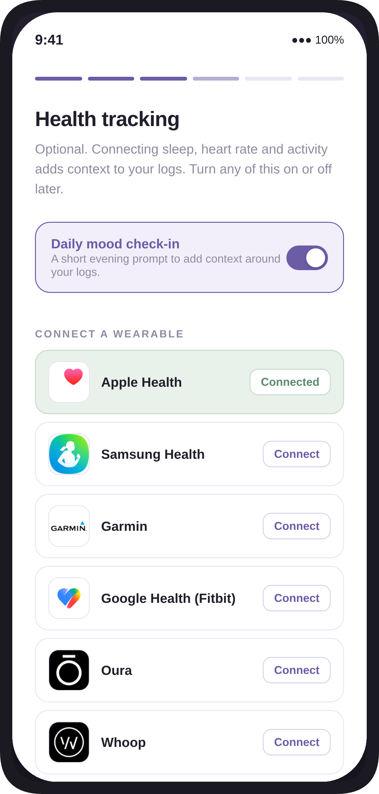
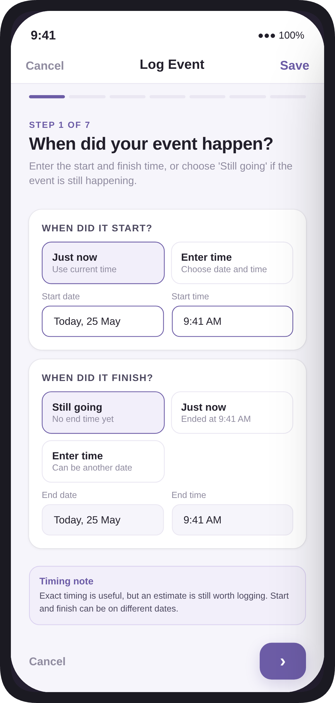
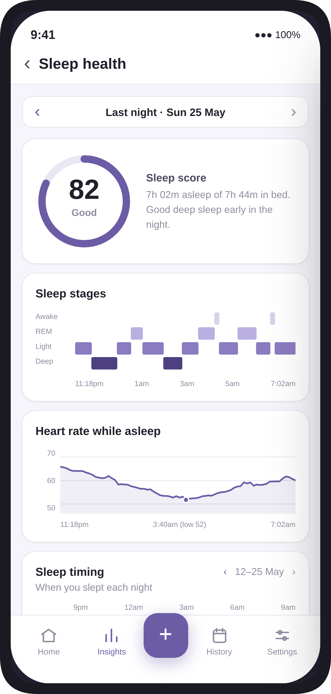
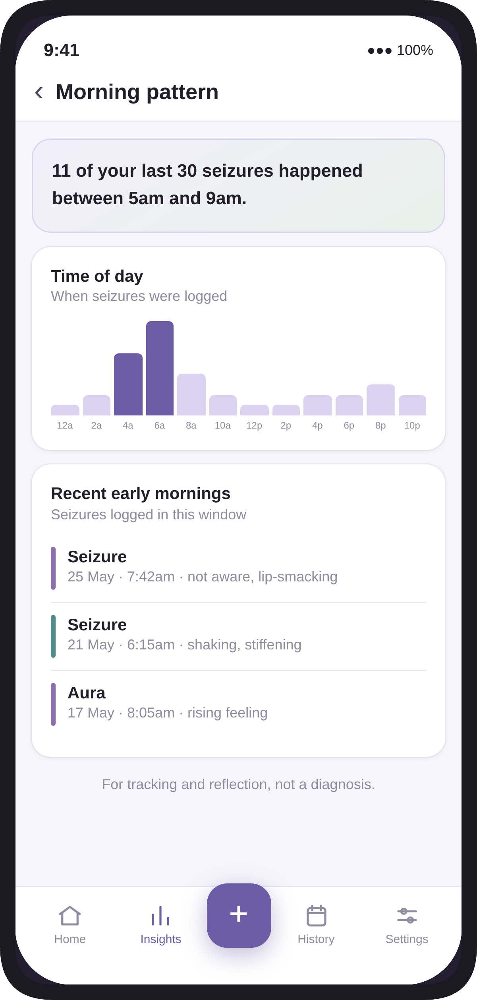
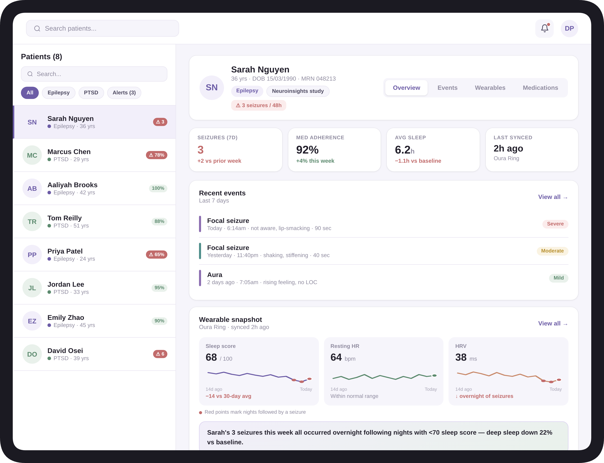
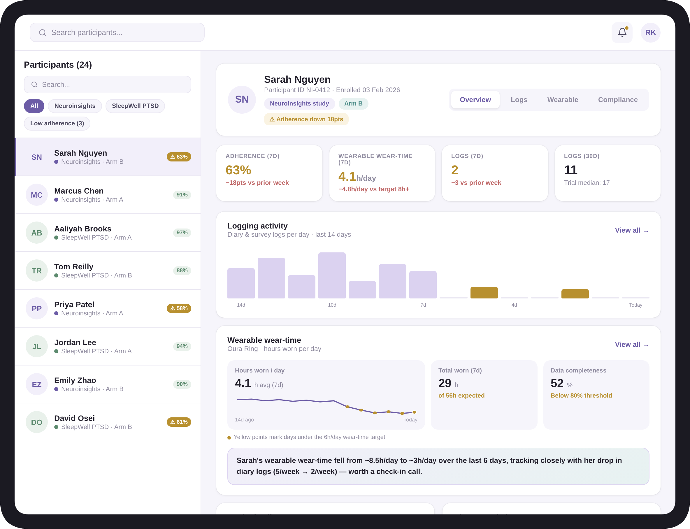
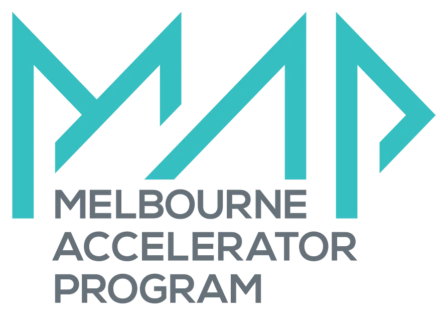
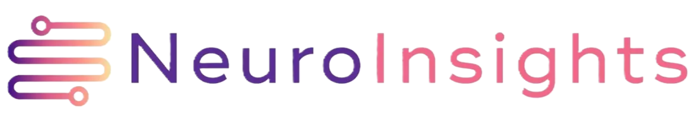

NeuroLog Technologies
Understand what happens between appointments.
Our technology links wearable data to neurological events (such as seizures,intrusions and migraines) for people living with episodic neurological conditions.
The problem
Life happens between appointments.
Epilepsy and other episodic neurological conditions are managed in short, infrequent clinic visits. Response to treatment and disease progression are often judged by events that patients can recall in a quick appointment visit, while ignoring things like sleep quality, medication adherence and triggers.
NeuroLog captures events, symptoms, medication and everyday health data over time. Patients can better understand their own patterns and share a more complete picture with their clinician, while researchers can work with higher-quality longitudinal data.
Digitally transform neurology care with ongoing data-driven insights and tracking.
The platform
Personalised insights at your fingertips.
NeuroLog combines self-reported symptom and medication tracking with wearable data to provide personalised insights into your condition, helping you to understand patterns and trends over time.
01
Patient app
Log symptoms and neurological events through the NeuroLog app, and sync with your regular smartwatch.
02
Personal insights
Spot patterns in your data. Set medication and logging reminders.
03
Clinical portal
Share data with your clinician via our portal, so they can make informed decisions.
04
Research
Utilise higher-quality, objective longitudinal data for neurology research.






Who it is for
Built for patients, clinicians and researchers.
For patients
A mobile app for tracking neurological events, symptoms, medication adherence and wearable data, with insights to help you better understand your condition.
Read more →For clinicians
A clinical dashboard summarising patient data over time, helping you make more informed decisions for your patients.
Read more →For researchers
A research dashboard to track and visualise study participants, while you capture objective longitudinal wearable and patient-reported data.
Read more →Our expertise
More than ten years in epilepsy, seizure forecasting and wearables.
We are a team of researchers, engineers and entrepreneurs, passionate about using digital health to transform neurology care and generate more objective, better quality data for research.
The team
Full team and advisors →Dr Rachel Stirling
CEO and Research Lead
Dr Michaela Vranic-Peters
CTO and Software Lead
Dr Dean Freestone
Advisor
Professor Ben Brinkmann
Advisor
Associate Professor Pip Karoly
Advisor
Partners and programs

